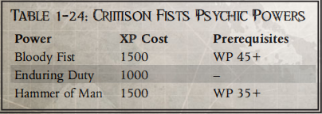

绯红之拳
兄弟们，今天我们来夺回属于我们的东西 并按照原体的指示保卫帝国。不要对这些绿皮手下留情，因为他们只是银河系的祸害。"
――绯红之拳第四连牧师豪尔赫-马丁内斯
虽然绯红之拳最初是一个以舰队为基础的战团，但作为暴风星域洛基星区的捍卫者，他们已经站稳了脚跟。该地区活跃着无数的兽人帝国，对帝国的利益构成了无时无刻的威胁。随着时间的推移，绯红之拳尤其擅长与这些野蛮的异种作战，尽管他们也与银河系中的各种对手进行过无数次战斗。作为帝国之拳的继承者，他们自豪地保持着这一传统，同时也忠实于《星际法典》的教导。
战团摘要 创立： 二次建军 章节世界： 瑞恩世界 要塞修道院 未命名 基因种子： 帝国之拳 前身： 帝国之拳 |
历史
荷鲁斯的叛军逃离泰拉后，极限战士军团的原体罗布特-吉利曼撰写了《阿斯塔特法典》。随着法典的诞生，原体要求他的兄弟们以他为榜样，将自己的军团划分为 1000 名成员的星际战士战团。起初，帝国之拳军团的原体罗格尔-多恩（Rogal Dorn）反对这一想法。他强烈认为，他的星际战士必须保持团结，这样他们才能继续紧密合作，保护帝国不受叛徒军团残余势力的侵害。随着两位首原体争论越来越激烈，这个问题也越来越成为冲突的关键点。最终，多恩选择同意吉里曼的要求，将他的军团分裂，而不是冒着再次内战的风险。在接受了这一决定后，原体多恩对军团进行了分化。由帝国之拳军团组建的两个战团分别是黑色圣殿和绯红之拳。多恩从最近加入军团的成员中挑选了绯红之拳成员，但军团领袖除外。新成立的战团的第一任战团长是亚历克西斯・波卢克斯，他是一位曾无数次赢得原体尊敬的战斗兄弟。波卢克斯以其强健的体魄和卓越的能力以及领导才能和战术专长而闻名，他领导绯红之拳走过了最初的 800 年。在此期间，他为绯红之拳对《阿斯塔特法典》的诠释和战斗理论的形成做出了巨大贡献。
绯红之拳战团作为一个远征战团，在其存在的最初九千年里，足迹遍布整个帝国。鲁提勒斯暴君号战斗驳船是他们在星际中的家，尽管还有额外的攻击巡洋舰为其提供支持。在过去的岁月里，绯红之拳建立起了忠诚服务的声誉，并在打击任何反对帝国的势力方面表现出了卓越的能力。他们的大部分活动都集中在暴风星区的洛基星域，但这并不是他们保卫帝国的唯一区域。
通过长期服役，绯红之拳经常响应审判庭和内政部的号召。无论敌人的性质如何，这些战斗兄弟始终忠于帝国及其神圣事业。他们的服务使这种信任得到了回报，以至于该战团曾两次受命消灭那些信奉异端的星际战士战团。这两次分别是向疯狂投降的吉迪恩之子，以及被异种感染而精神崩溃的警戒战士。随着沃尔提根远征征的成功，在 M40 年，泰拉高领主为了奖励绯红之拳，授予了他们洛基星域中瑞恩世界星球的完全封建权。在这次远征的过程中，绯红之拳在洛基星区内击溃了无数重要的兽人部队，防止他们联合起来形成压倒性的威胁。
杰里科地区著名的深红之拳 以下是绯红之拳战团中声名显赫的星际战士。 亚历克西-卡蒙修士 第一次见到卡蒙兄弟时，许多人都说他的外貌与罗格尔・多恩原体的艺术形象极为相似。当然，这位战斗兄弟的身材属于星际战士的典型范围，但面部却十分相似。虽然大多数人都认为这只是一个奇怪的巧合，但也有少数人认为这可能预示着这位战斗兄弟在某种程度上得到了原体的青睐。 事实上，这种眷顾很好地解释了卡蒙兄弟惊人的运气。当然，所有星际战士都应该能够轻松自如地处理爆炸物，而且往往是大量的爆炸物。作为一名毁灭者，战斗兄弟需要经常处理比平常更多的爆炸物。然而，卡蒙兄弟在执行任务的过程中却因喜欢引爆超大型爆炸物而声名狼藉。至少有七次，在卡蒙兄弟引爆了整个弹药库之后，他的杀戮小队才成功战胜了异种威胁。 豪尔赫-马丁内斯牧师 马丁内斯牧师在埃里奥赫要塞的战斗兄弟中最为人熟知，因为他愿意倾听并提供睿智的建议。据说这位牧师已经有 400 多岁了，显然在借调到死亡守望之前是位老兵。在杰里科边区里奇服役的这些年里，他一直担任守望指挥官莫迪盖尔的顾问。这包括在与来访的审判官举行多次会议之前和会议期间提供咨询。 据悉，马丁内斯牧师从未在这些会议上透露过任何秘密。不过，他也曾完全根据自己的权限向杀戮小队下达任务。有几次，他甚至直接在现场与其他杀戮小队合作，往往是为了支持一支对他的行动毫不知情的小队。守望指挥官莫迪盖尔一直在寻求牧师的建议，这让许多战斗兄弟认为，这些任务可能是莫迪盖尔间接授意执行的。无论如何，牧师显然得到了守望先锋指挥官的信任和尊重，并能接触到死亡守望在杰里科边区的许多秘密。 |
家园
瑞恩世界是洛基星域的一个封建农业世界。它的主要出口商品历来都是奇特的食物，这些食物在洛基星域的帝国贵族中享有盛誉。这个世界在很大程度上与其他人类居住的星球隔绝，但绯红之拳的存在导致其实施了广泛的行星防御系统。此外，绯红之拳在 M40 年沃尔提根远征期间的行动大大缓解了该星域的兽人势力。绯红之拳与瑞恩世界的人类几乎没有直接关系。他们的要塞修道院位于地狱之刃山脉中。在这座巨大建筑的主殿中，供奉着一座纪念伟大之父亚历克西斯-波卢克斯的雕像，这座雕像在战斗驳船中保留了数个世纪。随着它来到瑞恩世界，这座建筑将继续作为战团最神圣的场所之一。
虽然瑞恩世界是他们的家园，但他们并不积极从那里招募成员。绯红之拳作为一个远征战团已经有上千年的历史了，他们在洛基星区的许多世界都建立了征兵制度。虽然有几个世界拥有重要的科技基地，但绯红之拳一般都优先从野蛮世界招募成员。不过，他们从不寻找那些为野蛮而野蛮的人。相反，最合适的人选都具有荣誉感、运动能力和面对巨大困难时的坚忍不拔精神。自从建造了要塞修道院后，绯红之拳就把招募重点放在了离瑞恩世界相对较近的黑水星。虽然有时也会从其他世界招募有志之士，但这种做法已经越来越少见。
战团每年都会前往黑水星举办血拳节。在这个仪式上，候选人要接受一系列考验，以评估他们的武术、心理和精神实力。很少有人能进入后期阶段。最后的挑战要求有志者深入星球的有毒沼泽，徒手杀死一条倒钩龙。每年，能够完成这一残酷考验的人寥寥无几。然而，那些成功存活下来的人完成绯红之拳战团入会仪式的几率要远远高于其他大多数战团的入会仪式。
基因种子
绯红之拳的基因种子非常稳定和健康。若非如此，该战团不可能在历史上遭受的巨大损失中幸存下来。由于所遭遇的事件，该战团被迫以大大高于正常预期的速度招募新成员。在这种情况下，入门者职业生涯中所需的手术失败率大大增加，这很可能是由于药剂师个人的工作量造成的。在性格上，他们的基因种子与帝国之拳的祖先极为一致。该战团的战斗兄弟身上没有 "贝切腺体 "和 "苏安脑膜 "植入物。这些植入物的缺失使战斗兄弟无法吐酸或进入维持生命的深度睡眠，而深度睡眠最常用来缓解严重创伤。
瑞恩世界之战 死亡守望使用的阿基鲁斯远征背景发生在 817M41 年。当时，绯红之拳战团活跃在洛基星域，正如本节中的描述所示。他们装备精良，所有连队都具有名义上的有效战斗力。然而，绯红之拳在 989M41 年遭遇了一次对战团具有决定性意义的事件。那就是由阿卡森斯特-斯纳格罗德（Snagrod the Archarsonist）率领的Waaagh! 虽然这一事件尚未发生，但我们在此简要介绍一下，供使用其他设置的游戏管理员或可能在其活动中加入按时间顺序排列的战斗兄弟的游戏管理员参考。 Waaagh! 斯纳格罗德对帝国的第一次主要攻击发生在他们征服防御薄弱的殖民地世界巴德兰丁时。这个世界的帝国公民大声疾呼，要求援助，绯红之拳第四连也积极响应。然而，由于情报错误，星际战士惨败于数量庞大的兽人部队。 战团将所有部队召回瑞恩世界，准备对即将到来的Waaagh！采取防御行动，在获得进一步情报之前暂停任何进一步的袭击。在所有绯红之拳连队返回后，但在战团计划反攻之前，Waaagh！斯纳格罗德抵达了瑞恩星系。"绯红之拳 "做出了回应，启用了多层次、战术能力强、技术复杂的轨道防御卫星网络。该系统歼灭了最初的几波兽人和行星攻击飞船。然后，悲剧发生了，该星球的一枚防御导弹发生了灾难性故障。这枚导弹没能飞出大气层，而是撞上了要塞修道院。在那里，它的等离子弹头爆炸了，爆炸过程中引爆了这座建筑庞大而古老的军火库。二次爆炸撕裂了要塞修道院，摧毁了它，并杀死了数百名聚集在一起计划反击兽人瓦卡的星际战士！在这场毁灭性的爆炸中，只有 16 名星际战士侥幸生还，其中包括战团长康托尔。 由于要塞修道院是防御卫星的主要控制中心，随着它的摧毁，星球的防御网络也随之崩溃。兽人入侵者在降落到星球表面时，几乎压垮了星球上的抵抗力量。爆炸中的少数幸存者设法穿过星球，穿过数量庞大的半兽人，到达了这个世界的前首都： 新瑞恩城。在那里，他们与近四百名幸存的战斗兄弟团聚，他们震惊地发现自己的战团长还活着。 在帝国海军庞大的舰队抵达之前，幸存者们抵抗了 18 个月的兽人侵袭。新来的舰队成功击溃了星球上的异种部队，解放了幸存的星际战士。然而，损失已经造成。除了失去要塞和近 60% 的弟兄之外，该战团还失去了许多不可替代的基因种子和古老的装备。尽管损失惨重，绯红之拳还是开始了重建进程。他们开始积极招募新成员，以取代那些牺牲的成员。然而，正确训练一名星际战士需要数十年的时间，即使是最精湛的军士也只能训练出少数几名新进者。该战团可能需要几个世纪的时间才能恢复到正常的战斗力。 |
哲学
波卢克斯团长按照《阿斯塔特法典》规定的结构重组了他的战斗兄弟会。不过，他仍然沿用了作为帝国之拳成员时从原体那里学到的许多战术和传统。因此，绯红之拳与他们的先辈一样，仍然是防御行动的专家。该战团保持着允许一名战士在进入重大冲突之前佩戴徽章并获得帝皇冠军身份的传统，但这一做法只在极少数情况下被采用。同样，绯红之拳也是与帝国之拳一起参加刀锋盛宴的十二个战团之一。
几个世纪以来，随着绯红之拳不断发展并建立起自己的传统，他们开始在每年中保留一系列神圣的日子。这些日子专门用来纪念皇帝、原体和伟大之父波卢克斯，但不是祭拜他们。其中最重要的日子是 "创始日"，这一天是为了纪念在荷鲁斯异端悲剧之后创始的战团。为了庆祝这一天，战团的所有成员都会聚集在要塞修道院，而那些在远离瑞恩世界的地方执行任务的成员则会举行私人仪式。人们向聚集在一起的战斗兄弟朗读亚历克西斯-波卢克斯和罗格尔-多恩的著作节选，然后由个人讲述战团的历史故事和一些近期发生的事件。这样，兄弟们就会想起他们祖先的功绩，以及这些功绩如何在今天继续得到应用。该战团已开始接受《阿斯塔特法典》，包括其中关于战斗准备的许多核心理念。绯红之拳使用口述历史来提醒自己的祖先，他们有能力适应与数百个不同种族的异种作战，他们还善于应对战争的各个阶段，所有这些都使绯红之拳成为一个有能力面对各种不同对手的战团――这是他们在长期征战中必须学会的一门功课。
作为一个以舰队为基础的战团，绯红之拳善于与银河系中的众多异种敌人作战。与此同时，他们与洛基星区的兽人祸害不断作战，这也使他们特别关注这些敌人。绯红之拳 "在死亡守望中有着光荣的服役历史，这使他们能够磨练并与其他杀戮小队成员分享这些技巧。
绯红之拳从不吝惜展示他们对帝国的忠诚，他们的战斗口号 "只有皇帝，他是我们的盾牌和保护神"就体现了这一点。
绯红之拳人物 绯红之拳是第二创始战团，拥有辉煌的历史，为自己和创始战团帝国之拳赢得了许多荣誉。绯红之拳 "顽强而英勇，因多次对抗兽人威胁而闻名，并因其对付绿皮人的能力而在冲突双方赢得了血腥的声誉。绯红之拳 "星际战士可获得以下好处： +10意志力、异形猎手天赋（这只适用于兽人，除非战斗兄弟作为进阶获得完整天赋）以及单人模式能力 "兽人杀手"。 植入物： 与 "帝国之拳 "的祖先一样，"帝国之拳 "不会从 "贝切腺体 "和 "苏安脑膜 "植入物中获得任何好处。 举止：死亡守望的宠儿 几个世纪以来，绯红之拳一直在发动皇帝与异形的战争，在银河系的各个角落与无数异形作战。多年来，绯红之拳的战斗兄弟们在消灭绿皮战士方面已变得异常娴熟。绯红之拳 "在对付兽人时所展现出的高超技艺已被帝国军队和异种人自己所注意，指挥官们也会迅速向 "绯红之拳 "发出请求，以防他们落入Waagh!的阴影之下！绯红之拳的专长得到了死亡守望的认可，多年来，死亡守望与绯红之拳之间建立了牢固的关系。绯红之拳的许多最资深、最精通战斗的兄弟都曾在死亡守望中服役，并为其审判官们磨练战斗技艺。这些人确保死亡守望得到应有的待遇，绯红之拳中的许多人也被借调服役，这种安排对战团和修会都有利。 因此，绯红之拳既为自己在死亡守望中的地位感到自豪，同时也肩负着重大的责任。这有时会让他们的杀戮团队感到不满，因为其他人认为他们冷漠而有权利，似乎佩戴死亡守望银色护肩的权利永远是他们应得的，而不是只有通过荣耀和死亡才能获得的。 |
战斗理论
绯红之拳战团成立之初，多恩授予战团波卢克斯战团成员资格，这些成员来自帝国之拳军团最近加入的成员。这些战斗兄弟训练有素、忠心耿耿，同时也是军团中头脑最冷静的成员。正因为如此，新任战团长能够更有效地贯彻《阿斯塔特法典》的教导和新传统。
除少数例外情况外，绯红之拳在组织和战场程序方面与法典非常一致。他们始终遵循《法典》中介绍的战术，以神圣法典描述的方式有效利用不同的标准单位。他们的训练内容广泛且包罗万象，因此该战团可以有效地对抗在战斗中使用截然不同战术的对手。这样，绯红之拳就能迅速调整战术，击败任何反对帝国意志的人。
长达千年的积极讨伐也使得绯红之拳拥有比法典规定更多的专家。在此期间，他们组建了一支由战斗驳船和攻击巡洋舰组成的庞大舰队。自定居瑞恩世界以来，他们一直维持着这支舰队。传统上，他们的技术兵负责维护舰队的船只和战团的车辆。每艘主力舰上都至少有一名药剂师，以确保在需要时能采集和保存基因种子。虽然该战团在整个银河系都有服务，但数千年来他们一直把洛基星区作为主要的行动基地。自从人类首次进入洛基星区以来，该星区就一直被兽人统治着，绯红之拳与这些野蛮的异种人进行了无数次战争。虽然他们并不是专门为战胜这些敌人而战，但该战团的战斗兄弟们对兽人的心理、生理和战术都非常熟悉。该地区近乎源源不断地出现兽人战队，因此这种训练非常必要，也非常有用。当大量兽人部队在帝国境内集结时，行内政部甚至审判庭都会请求深红之拳的援助。作为 "帝国之拳 "的继承者，深红之拳在防御战中表现出了明显的优势。该战团的战舰和要塞修道院都有严密的防御。即使是他们作为战团的第一次交战，也是在乌拉列克主星上保卫帝国殖民地，抵御一支庞大的灵族部队。
绯红之拳过去
| 1D5结果 | 过去经历 |
| 1 | 兽人杀手：所有绯红之拳都接受过对付兽人的训练，在本会与绿皮的无数次战争中，大多数人都曾与他们交过手。在你成为战斗兄弟的最初几年，你亲手杀死了一个强大的小子，这在战团眼中是一个有利的信号，你必须永远努力不辜负它。 |
| 2 | 光荣的祖先：绯红之拳在其悠久而辉煌的历史中拥有众多英雄，他们的事迹受到了皇帝的嘉奖。你们流淌着这些英雄的血液，自加入绯红之拳战团以来，你们就时刻铭记着这一事实以及对你们所寄予的厚望。 |
| 3 | 沃尔提根老兵： 直到最近，绯红之拳还是一个舰队出身的战团，没有一个固定的家园世界，不过在沃尔提根讨伐战之后，这一切都改变了，因为他们获得了瑞恩世界。您亲历了战团的胜利，也是少数几个能为您的战友讲述胜利故事的人。 |
| 4 | 瑞恩世界原住民： 瑞恩世界是一个和平文明的世界，战团通常不会从这里招募成员（而是选择附近的野蛮世界）。你是一个罕见的例外，你已经证明了自己配得上加入战团，但你必须不断向兄弟们证明，尽管你身为后裔，你同样精通战斗。 |
| 5 | 忠诚分裂： 大多数绯红之拳拥护他们在死亡守望中的新主人和他们的荣耀。而你并没有像你的兄弟们那样适应，你发现对你所在战团的忠诚高于杀戮小队的忠诚。虽然你身着死亡守望的黑衣，服从守望队长的命令，但你无法完全接受身边的人是真正平等的人。 |
绯红之拳原体诅咒：死亡中的荣耀
绯红之拳就像他们的创始战团一样，非常愿意战斗到最后一刻，以一种背水一战的心态坚守阵地，不成功便成仁。在长时间的战斗后，尤其是在面对像Waagh兽人大军这样数量众多、难以抵挡的敌人时，"绯红之拳 "成员的这种责任感会变得异常强烈！在这种情况下，战斗兄弟眼中只有死亡；战友的死亡、世界的死亡和敌人的死亡。他们认为唯一正确的道路就是为此牺牲生命，并将以坚忍不拔的精神和一心一意的态度面对死亡，而这只会导致他所面对的一切和所有人彻底毁灭，最终往往包括他自己和与他并肩作战的人。
1 级（无退路）： 随着胜算的减少，战兄也顽强地拒绝退缩，他只看到击败如此强大的敌人所带来的荣耀和荣誉，哪怕只剩下一丝胜利的曙光。即使法典的理论和教导要求撤退或灵活防御，战斗兄弟也不愿脱离战场，除非别无选择，但往往为时已晚。当战斗兄弟想从战斗中撤退时，他必须通过挑战（+0）意志力测试。如果显然没有获胜的机会，GM可以在测试中给予战斗兄弟 +10 至 +30 的奖励。如果他没有通过撤退测试，那么在他自己或他的一名兄弟受伤之前，他不能再进行测试。
2 级（不服输）： 失败对战斗兄弟来说是难以下咽的苦果，他宁愿战死也不愿接受失败的事实。这可能会导致他不顾一切地投入战斗，或者在谨慎和战术理性要求他撤退的情况下，为了获胜而承担过大的风险。如果 "战斗兄弟 "受到的伤害超过 10 点（已扣除护甲或韧性的影响），或者他的 "杀戮小队 "中有人失去行动能力或死亡，他就会再次发动猛烈攻击，并向敌人发起冲击。在这种情况下，他必须进行攻击，寻找敌人中最能干或最危险的一个。在接下来的回合中，以及之后的每个回合中，他都可以进行一次挑战性（+0）意志力测试，选择撤退或改变战术。
3 级（至死方休）： 战斗兄弟已经开始接受这样一个观点：也许只有付出自己的生命代价才能取得胜利，并且乐于放弃生命。如果他有机会为皇帝牺牲，并为帝国的敌人带来毁灭，这可能会带来可怕的后果。一旦战斗兄弟遭受重创，他就会产生一种宿命论的欲望，愿意为事业出卖自己的生命，并选择牺牲自己的生命来换取胜利的机会或兄弟们的安全。这意味着他会不顾自己的伤势继续战斗，并继续攻击或将自己置于攻击路径上，即使下一击可能意味着他的死亡。他还会毫无怨言地欣然接受自杀性或近乎自杀性的任务（如拆除不稳定的弹头、引导渺茫的希望或守住突破口为同伴争取时间）。如果战斗兄弟在执行此类任务时死亡，他仍可像平常一样消耗一个命运点数，以某种方式存活下来。
| 中文 | 英文 | 消耗 | 类型 | 先决条件 |
| 禁忌知识：异形 | Lore:Forbidden(Xenos) | 100 | 技能 | |
| 禁忌知识：异形+10 | Lore:Forbidden(Xenos)+10 | 200 | 技能 | 禁忌知识：异形 |
| 禁忌知识：异形+20 | Lore:Forbidden(Xenos)+20 | 300 | 技能 | 禁忌知识：异形+10 |
| 复仇怒吼 | Call To Vengeance | 600 | 天赋 | Fel30 |
| 命硬 | Die Hard | 600 | 天赋 | WP40 |
| 至死方休 | Duty unto Death | 600 | 天赋 | WP45 |
| 憎恨（兽人） | Hatred(orks) | 400 | 天赋 | |
| 异形杀手 | Hunter of Aliens | 500 | 天赋 | |
| 皮糙肉厚 | True Grit | 600 | 天赋 | T40 |
绯红之拳单人模式能力
兽人杀手是绯红之拳战团的战斗兄弟可使用的新单人模式能力。
兽人杀手
动作 自由行动
所需等级：1
效果： 绯红之拳对战兽人和其他异种的战绩令人印象深刻，他们的胜利战绩和辉煌战绩历历在目。兽人和他们的同类――包括格瑞辛（Gretchin）、史奎格（Squigs）和史奎格斯（Squiggoths）――是 "绯红之拳 "特别偏爱的敌人，每一位战斗兄弟从早期就开始学习击败这些令人憎恨的异种的最佳方法，并有大量机会在实战中检验自己的技能。在与兽人作战时，战斗兄弟知道如何瞄准目标造成最大程度的伤害；可以使用位置准确的爆弹，也可以使用链锯剑横扫。战斗兄弟使用远程或近战武器对兽人造成的伤害只会减去该生物韧性加成的一半――向上取整。护甲仍会正常减少伤害。
改进： 在等级 5 时，战斗兄弟还能熟练地找出兽人装甲的薄弱点，即那些破烂的护板无法连接或无法提供保护的地方。战斗兄弟对兽人的任何远程或近战攻击的穿透力都会增加 4。
绯红之拳小队模式能力
绯红之拳攻击模式：专职杀戮队
行动：半行动
代价：2
持续： 是
效果 绯红之拳小队及其所属的杀戮小队在对付异种时尤其擅长。在绯红之拳的指导下，小队可以协同作战，利用战斗兄弟的丰富知识挑选薄弱和易受伤害的区域进行攻击，利用薄弱的装甲或生物的天然盲点来对付异形敌人。如果选择攻击单个目标，战斗兄弟和支援范围内的人可以将猎杀异形的奖励结合起来。在一个回合内（从小队长回合开始到下一回合开始），拥有异形猎手天赋的小队成员对单个敌人的每次连续攻击都会增加前一次攻击的命中和伤害加成。没有外星人猎手天赋的小队成员也可以从这项能力中获益，如果他们攻击的目标与其战友相同，则会获得前者提供的当前命中和伤害加成，但自身不会获得任何加成。
改进： 在等级 6 时，杀戮小队可以将攻击分散到多个敌人身上，只要所有杀戮小队都在支援范围内，累积的命中和伤害加成将对战斗中任何选定类型的异种生物有效。
示例 阿瓦多斯和他的由特拉凡、科什和艾兰组成的杀戮小队都在使用专用杀戮小队模式能力。阿瓦多斯作为小队长触发了该能力，然后对一名泰伦战士发动了攻击。由于他拥有 "异形猎手 "天赋，他的攻击获得了武器技能 +10 和伤害 +2 的加成。接着，同样拥有 "异形猎手 "天赋的特拉凡攻击了同一个泰伦战士，他的攻击与阿瓦多斯的攻击相加，武器技能+20，伤害+4。然后科什也攻击了这个战士，不过他没有外星人猎人天赋，所以只能获得当前的武器技能 +20 和伤害 +4 的加成。最后，Eyran 攻击了同样的生物，由于他拥有 "异形猎手 "天赋，因此奖励上升到武器技能 +30 和伤害 +6。在阿瓦多斯的下一个回合开始时，这些奖励将全部消失，并从头开始。 |
绯红之拳防御模式：最后一击
行动： 自由行动
代价：1
持续： 是
效果 每一个陨落的战友都是一个巨大的悲剧，也是对任何战团士气的打击。星际战士要学会利用这种愤怒和愤慨来加强对敌人的攻击，每损失一名战友都要更加努力地战斗。绯红之拳拥护这种思想，即使敌人离他们的胜利越来越近，剩下的人也会更加努力地战斗，最后一名战友会以非人的力量砍杀和轰击剩下的人，直到咽下最后一口气，流尽最后一滴血。当这项能力激活时，任何在战斗中倒下的战斗兄弟（无论是失去战斗能力还是被杀死）都会增强整个团队的力量，并为剩下的人提供 3 点命运值。这些 "命运点数 "不能被燃烧，但可以用正常的方式获得奖励。任何战斗兄弟在支援范围内都可以使用这些命运点数代替自己的命运点数。
改进： 等级 4 时，阵亡的战斗兄弟可为团队提供 4 点额外的命运点数。等级 7 时，阵亡的战斗兄弟可为其杀戮小队提供 5 点额外命运点数。
绯红之拳灵能

血拳
动作： 半行动
对抗：无
范围：自身
持续： 是
描述：绯红之拳的智库掌握的力量可以帮助他们消灭异种，尤其是那些皮糙肉厚的异种，因为它们可能会阻碍普通攻击或削弱攻击力。有了 "血拳 "的力量，智库就能在近战攻击中注入额外的力量，即使他的攻击没有穿透异种的装甲或皮甲，也能造成一定的伤害。当这种力量激活时，智库的任何近战攻击即使没有穿透敌人的护甲或韧性，也有几率造成要害效果。如果近战攻击成功命中目标，除了其他效果外，目标还必须进行一次常规（+20）韧性测试。该测试会受到心理等级 x -5 的惩罚。如果失败，目标将受到致命效果，就像受到武器造成的 1d5 点致命伤害一样。不会造成实际伤害，而且临界效果只在力量维持期间持续。
示例 绯红之拳智库艾龙对半兽人使用了血拳的力量，他用力量剑击中了兽人的左臂，但在扣除护甲和韧性加成后，他没有造成足够的伤害。尽管他没有造成任何伤害，但兽人必须进行韧性测试，惩罚为-10（常规测试为 +20，但艾龙的心理等级为 6 x -5，惩罚为-30）。兽人没有通过韧性测试，因此艾隆在手臂致命伤上滚动 1d5，查看血拳的效果。他掷出了 3 点，对半兽人造成了 2 级疲劳，并使它丢掉了手臂上的任何东西。 |
持久职责
行动 自由行动
对抗： 否
范围： 5m x 灵能等级
持续 是
描述 绯红之拳将责任放在首位，即使死亡的阴影笼罩着他或他的同伴，他也会继续战斗到底。即使身体已经放弃，所有希望都已破灭，智库仍会坚定自己或同伴的精神，战斗到底。智库或范围内的一名盟友都可以成为持久职责的目标。在保持这种力量的同时，目标可以继续战斗数个回合，回合数等于他受到致命伤害后的灵能状态等级，并忽略因致命伤害而获得的疲劳度。在这段时间结束时，他将像正常人一样死亡（尽管他仍然可以像正常一样燃烧一个命运点数来存活）。如果他再次受到重伤，则在相应的重伤效果表上滚动 1d10 以查看他是否再次受到残废伤害，并忽略任何死亡结果或疲劳程度。即使有智库的精神意志支撑，如果战斗兄弟在一次攻击中受到两倍于其起始承伤总数（扣除护甲和韧性加成后）的伤害，他仍有可能被摧毁（和杀死）。受此能力影响的战斗兄弟无法恢复已损失的伤口，也无法修复因重创而产生的效果。任何可以做到这一点的能力或行动对该战斗兄弟都不起作用。
人类之锤
行动 完全行动
对抗：是
范围： 10 米 x 灵能等级半径
持续： 是
描述 绯红之拳智库将他对异种人的憎恨集中到一股有形的力量中，并将这股力量投射到他的周围，给任何非人类造成痛苦和折磨。当这种力量激活时，半径内的所有异种必须在每个回合开始时对智库进行一次意志力测试。如果失败，他们将受到相当于智库灵能等级两倍的能量伤害（护甲不减免），并在所有测试中受到 3 倍灵能等级的惩罚。任何受此能力影响的异种都会立即意识到它的来源，并可能将智库作为结束痛苦的目标。此能力只对异种生物产生影响，对非真正生物（如恶魔或机器）或具有少量人类血统的生物（如大多数变种人、异人，当然还有星际战士）无效。
绯红之拳饰品
以下物品是绯红之拳战团的战斗兄弟可以携带的战团饰品。
兽人骨护符
兽人的牙齿和头骨是绯红之拳战团战利品室中的常见物品，一些战斗兄弟会在战斗中携带这些护身符，以提醒自己战胜异形的实力。虽然有时这可能是一个完整的头骨，或者是被击败的兽人老大的破烂旗帜，但更常见的是一颗牙齿雕刻成的浮雕，显示了战团的伟大胜利，或者是杀死了一个庞大而强大的小子。虽然这样的战利品能提醒战斗兄弟他战胜兽人的技巧，但看到这些战利品也会激怒任何看到这些战利品的绿皮，刺激他们更加努力地杀死星际战士。绯红之拳 "星际战士如果拥有 "憎恨（兽人）"天赋，可以选择携带 "兽人骨护符"。该护符允许战斗兄弟使用 "憎恨（兽人）"天赋带来的 +10 攻击加成，用于武器技能和弹道技能。与战斗兄长交战的兽人会被这种护身符激怒，并获得针对他的憎恨天赋